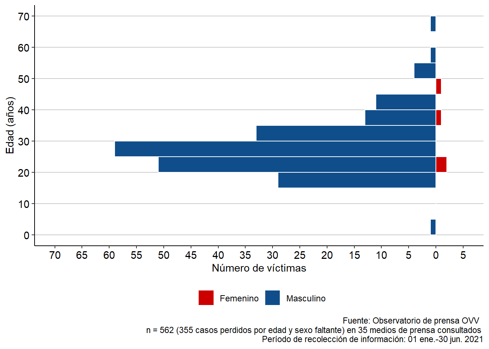
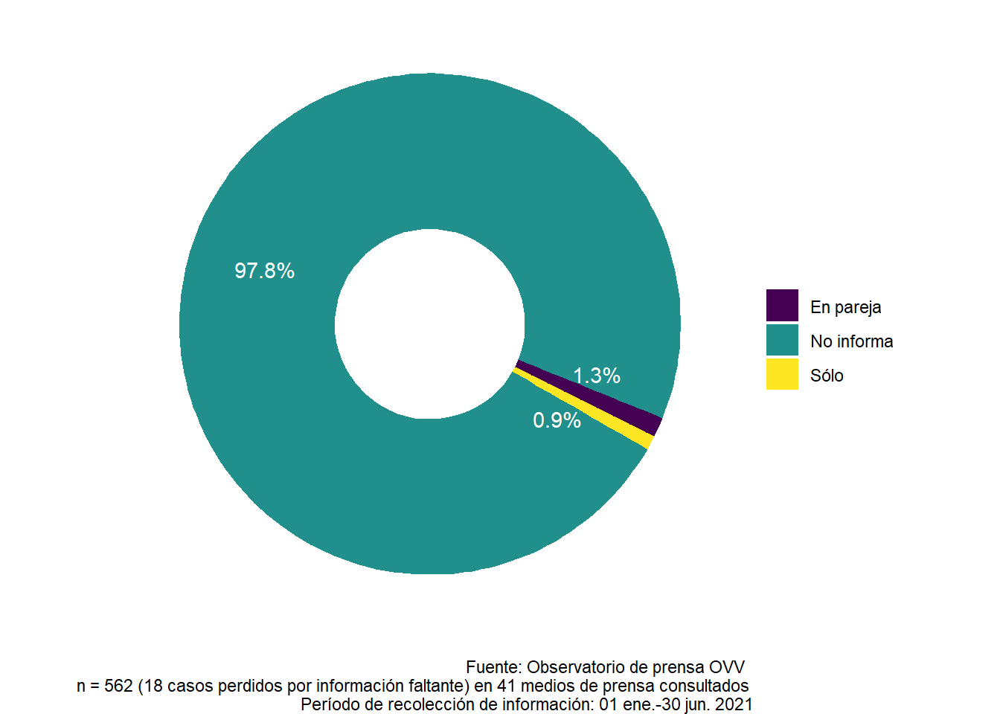
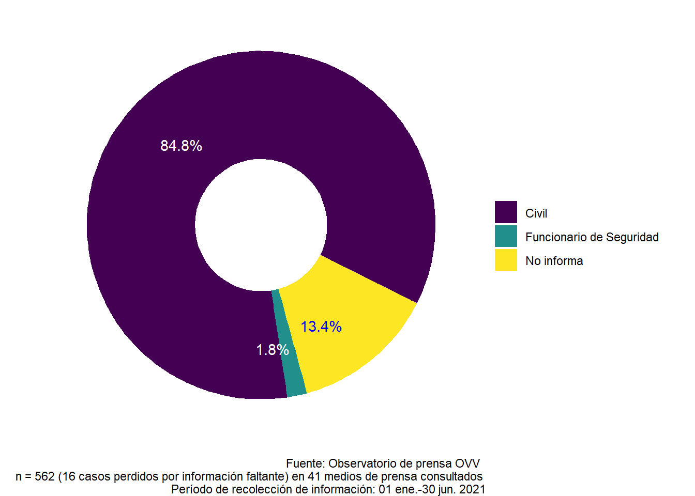
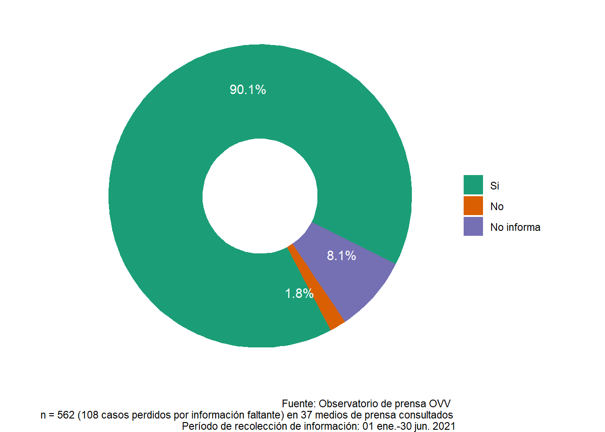

3 Víctimas intervención policial
3.1 Edad y sexo de la víctima

Figura 3.1: Número víctimas por intervención policial discriminados por edad y sexo.
3.2 Estado conyugal de la víctima

Figura 3.2: Estado conyugal de víctimas por intervención policial.
3.3 Condición de la víctima

Figura 3.3: Proporción de víctimas por intervención policial discriminadas por su condición: civiles o funcionarios de seguridad.
3.4 ¿La víctima era delincuente?

Figura 3.4: Proporción de víctimas por intervención policial discriminadas según sus antecedentes delictuales.